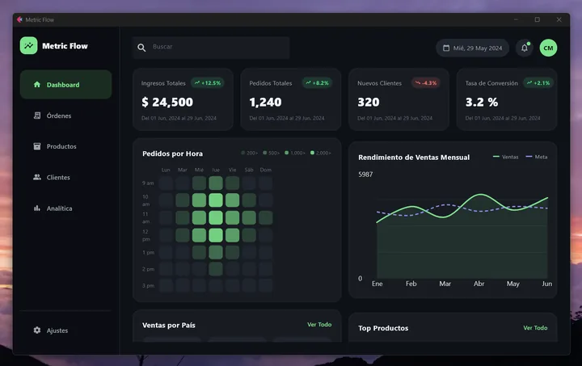

MetricFlowMetricFlow
Un dashboard de escritorio construido como producto: capas separadas, componentes reutilizables y vistas que crecen sin reescribir la interfaz.
A desktop dashboard built as a product: separate layers, reusable components and views that grow without rewriting the interface.

Captura real · datos de ejemploReal screenshot · sample data01ResumenSummary
MetricFlow es un dashboard administrativo de escritorio con seis secciones: Dashboard, Órdenes, Productos, Clientes, Analítica y Ajustes. Su valor principal está en la estructura del código, pensada para servir de base a otras herramientas de gestión y supervisión.
MetricFlow is a desktop admin dashboard with six sections: Dashboard, Orders, Products, Customers, Analytics and Settings. Its main value lies in the code structure, designed as a foundation for other management and monitoring tools.
02ProblemaProblem
Las aplicaciones de escritorio en Python suelen empezar en un solo archivo y se vuelven difíciles de mantener al agregar pantallas. Hacía falta una plantilla de proyecto que separara estilos, datos, componentes y vistas desde el inicio.
Python desktop apps often start in a single file and become hard to maintain as screens are added. A project template was needed that separates styles, data, components and views from day one.
03ObjetivosGoals
- Organizar el código en capas con responsabilidades claras.Organize code into layers with clear responsibilities.
- Crear componentes reutilizables para métricas, tablas y gráficos.Create reusable components for metrics, tables and charts.
- Centralizar colores y tipografía en un tema.Centralize colors and typography in a theme.
- Navegar entre vistas sin perder el estado.Navigate between views without losing state.
04Solución implementadaImplemented solution
El Dashboard reúne tarjetas de métricas con indicador de crecimiento, un mapa de calor de pedidos por hora, el rendimiento de ventas mensual frente a la meta, ventas por país y productos destacados. Órdenes, Productos y Clientes muestran tablas con insignias de estado y stock; Analítica resume ventas por categoría; Ajustes incluye preferencias con interruptores funcionales.
The Dashboard brings together metric cards with growth indicators, an orders-per-hour heatmap, monthly sales performance against target, sales by country and top products. Orders, Products and Customers show tables with status and stock badges; Analytics summarizes sales by category; Settings includes preferences with working switches.
05Arquitectura técnicaTechnical architecture
theme.py— paleta y estilos compartidos.theme.py— shared palette and styles.models/— estado de la aplicación.models/— application state.services/— acceso a datos (hoy, datos de ejemplo).services/— data access (sample data for now).components/— barra lateral, barra superior, tarjetas de métricas, mapa de calor, gráfico de ventas, badges de estado.components/— sidebar, top bar, metric cards, heatmap, sales chart, status badges.views/— una vista por sección.views/— one view per section.
06Mi contribuciónMy contribution
Definí la arquitectura, desarrollé los componentes y las seis vistas, y documenté la ejecución en el README del proyecto.
I defined the architecture, built the components and the six views, and documented how to run it in the project README.
07Decisiones de diseño e ingenieríaDesign & engineering decisions
- Servicio de datos aisladoIsolated data service
- Cambiar datos de ejemplo por una base de datos o una API no obliga a tocar las vistas.Swapping sample data for a database or an API doesn't require touching the views.
- Componentes pequeñosSmall components
- Una tarjeta de métrica o un badge se reutiliza en varias vistas con distintos datos.A metric card or a badge is reused across views with different data.
- Tema centralizadoCentralized theme
- Toda la app cambia de estilo desde un solo archivo.The whole app restyles from a single file.
08Dificultades y solucionesChallenges & solutions
- Estado compartido entre vistas: un modelo de estado de la aplicación evita pasar datos de vista en vista.State shared across views: an application state model avoids passing data from view to view.
- Cambios entre versiones de Flet: el proyecto fija la versión del framework en sus requisitos para que sea reproducible.Changes between Flet versions: the project pins the framework version in its requirements to stay reproducible.
09ResultadosResults
Aplicación funcional con seis vistas, componentes reutilizables y estructura documentada. Las cifras visibles en las capturas son datos de ejemplo, no resultados de un negocio real.
Working application with six views, reusable components and a documented structure. Figures visible in the screenshots are sample data, not results from a real business.
10Imágenes y diagramasImages & diagrams
La captura al inicio corresponde a la vista Dashboard. El repositorio incluye el código de las seis vistas para ejecutarlas localmente con pip install -r requirements.txt y python3 main.py.
The screenshot at the top shows the Dashboard view. The repository includes the code for all six views so you can run them locally with pip install -r requirements.txt and python3 main.py.
11AprendizajesLearnings
La misma estructura sirve para paneles de planta: sustituir el servicio de datos por lecturas de sensores o de un broker MQTT convierte este dashboard de gestión en una herramienta de supervisión.
The same structure works for plant dashboards: replacing the data service with sensor or MQTT broker readings turns this management dashboard into a monitoring tool.